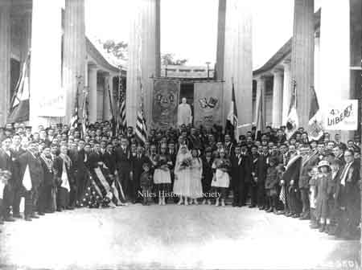

Ward-Thomas Museum


Bagnoli — Irpino Club
Ward — Thomas
Museum
Home of the Niles Historical Society
503 Brown Street Niles, Ohio 44446
Click here to become a Niles Historical Society Member or to renew your membership
Click on any photograph to view a larger image, click on image again to zoom into photograph.
|
242-1/2 Langley Street is in back of the Niles Firebrick office building and was the first home of the Bagnoli-Irpino Club. Mason Street Bagnoli-Irpino Club building purchased from the Thomas Steel family. |
Origin of the Bagnoli-Irpino Club By the 1930s there existed three fraternal organizations within this immigrant community. In addition to a chapter of the Sons of Italy established in the 1920s, members of this group participated in two locally formed organizations. During the end of the first decade of Italian immigration to Niles, residents of the small but growing ethnic community surrounding the NFB organized themselves into a small, self-held association, the San Filippo Neri Club. Open to any male of Italian descent, the club served as a gathering spot where members could socialize and participate in a variety of games such as Morra, Tresette, and Bocce. In conjunction with their local parish the group formally celebrated the feast day of their patron saint, Filippo Neri, with attendance at mass and an all-day party featuring free food and drink for family and friends. Their dues also provided a death benefit for members and their families. The “insurance” covered the costs of a modest funeral for any paid member and his immediate family.37 The establishment of the Bagnoli Club in 1923 represented an equally significant movement within this community. Loosely affiliated until 1932, the group formerly organized and purchased from the Thomases a building on Mason Street in Niles. The structure served as their headquarters and a community gathering place. Nick Alfiero, Rocco Gargano and Lawrence Toriello, all tracing their descent from Bagnoli-Irpino and the Niles Firebrick Company, established the Bagnoli-Fraternal Order organization in the midst of the Great Depression as a buffer against the economic problems that plagued the community at large.38 In addition to the more social functions of the group, the Bagnoli Club provided informal educational services. More established members of the club taught classes where newer immigrants could learn English and prepare for citizenship exams. Advanced offerings featured courses that improved literacy.39 While not unique within the Italian-American experience, this relatively small group of immigrants displayed an unusual tendency toward “joining.” Immigrants not only associated across parochial Italian barriers, they did so very early in their American lives. They also organized to make progress toward goals that encouraged their assimilation into the American mainstream more rapidly than their counterparts in larger metropolitan areas. Martha Pallante To Work and Live: Brickyard Laborers, Immigration and Assimilation in an Ohio Town, 1890-1925 source: https://blogs.uakron.edu/nojh/2003/09/20/to-work-and-live/ |
|
| 1932 Bagnoli-Irpino Club PO2.122 1936 Bagnoli-Irpino Club 1960 San Filippe Bocce League Runner-ups |
Eileen Roberts Remembers the Bagnoli Club As a kid growing up in Niles, my friends and
I would frequent places on Robbins Avenue such as James Dairy,
Morabito’s Market and Woodcock’s Drug Store. To
our delight, cherry phosphates, plump fruit and a large supply
of comic books were enjoyed at these places. My grandfather, Dominic Clemente,
was born in Bagnoli Irpino, Italy. He worked there as a laborer
and in 1905 traveled to Niles with his brother, Aniello
Clemente, sister, Lucia Clemente and her husband,
Joseph Pallante. News of available work at the Niles
Fire Brick Company had reached their village and was a strong
incentive for many men to move. Grandpa Clemente obtained a
job as a night watchman at the Fire Brick Company where he worked
until retiring. Many men who traveled from Bagnoli Irpino held
jobs there. |
|
 Patrick DeFabio front center with hat
and watch chain, 2-1/2 years old. |
1936 Trumbull County Bocce Champs |
Bagnoli-Irpino Band Front: Gatta, Macchia, Villio, Brutz, |
| |
||
|
The Bagnoli-Irpino Club, located on Mason St. in Niles. Founded in 1932. PO1.123 Panorama of the dedication of new Bagnoli-Irpino hall dated April 29, 1929. |
||
|
|
||
{kind=link}
{kind=link}
{kind=link}
{kind=link}
{kind=link}
{kind=link}
{kind=link}
{kind=link}
{kind=link}
{kind=link}
{kind=link}
{kind=link}
{kind=link}
{kind=link}
{kind=link}